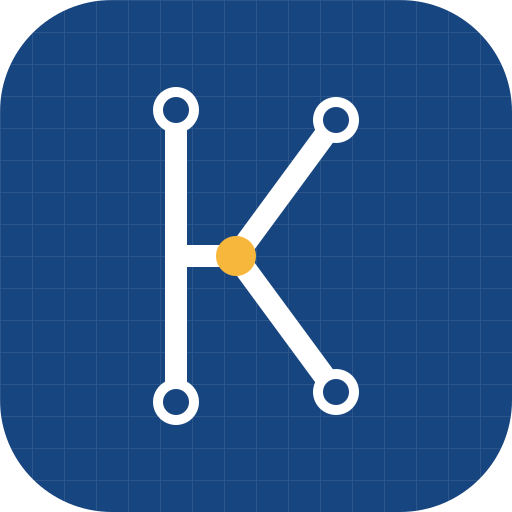

Kringo
Gratis CAD voor elektrische installaties, in de browser en offline. Kies een app:
🏠
Kringo Gebouw
Woningen en gebouwen volgens AREI: plattegronden, stopcontacten, verlichting, kringen, domotica, kabeltrace en het eendraadschema.
⚙️
Kringo Besturing
Stuurkasten (stuurstroom, vermogen, PLC, klemmen, lijsten) samen met hydraulica en pneumatica – met simulatie.